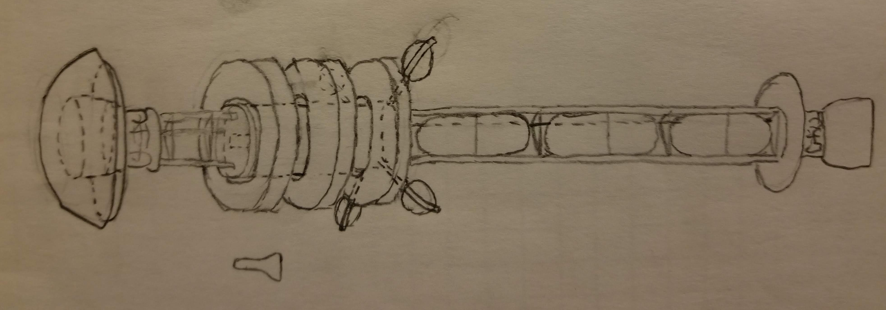
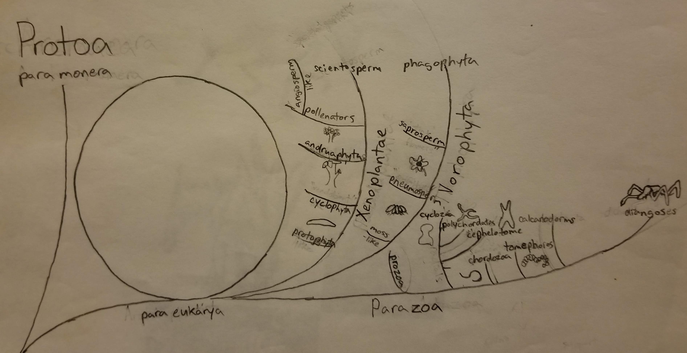
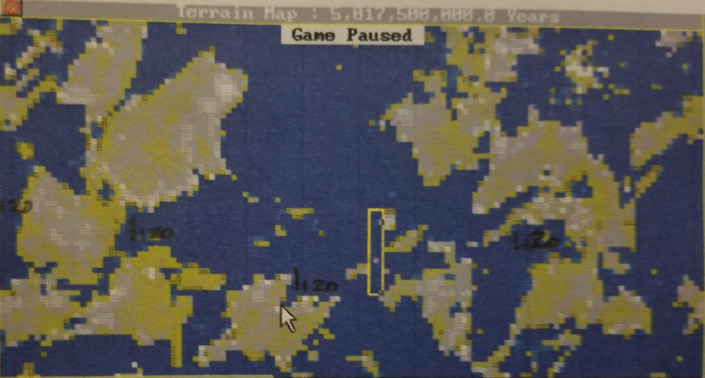
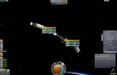

Tectonics.js

Deep Dive:
Orbital Mechanics, Insolation, & Climate
Overview
- Inspiration
- Use Cases
- Development
- Deep Dive
Inspiration
High School



- Science Fiction
- Interstellar Rocketry
- Speculative Biology
- World Building
- Sim Earth
- Programming
Idea: make a scientifically accurate sim earth for modern times
Grad School
Idea: stop thinking about it and just do it
PyTectonics
After Grad School
Tectonics.js
Use Cases
- Authors
- Modders
- Developers
Deep Dive
Problem: How do we quickly estimate average temperature on a planet?
Requirements:
- Any location
- Any point in time
- Any window across time
- Any stable stellar system
- In under 10ms
Deep Dive
Overview
Orbital Mechanics
Design Considerations
- Simulates timesteps from 10ms to 10ky
- Generates multiple sample ephemerides for any body
- Runs in under 10ms
- Resilient to floating point errors ("Anti-Kraken" clause)

3D
- Looks neat, but is it useful?
-
3D graphics are computationally intensive, but we've spent decades building up techniques to make it work:

- Say, informatics can can be computationally intensive, too...
- Why not synergize!
- Leverage the graphics libraries we're already using to push analytical code to the GPU
Possibilities
- Binning/nearest neighbor algorithms
- Haplotyping
- Custom queries
Architecture
- Don't try to guess what the user wants, let him decide
- Shift analytics off server and on to client
- Maximize information density of sent data:

Architecture
- Get data from server in image format

- Transform information with optional feedback effects
(e.g. binning)
- Final render pass...
Binning/Nearest Neighbor Demo
Thanks

Questions?